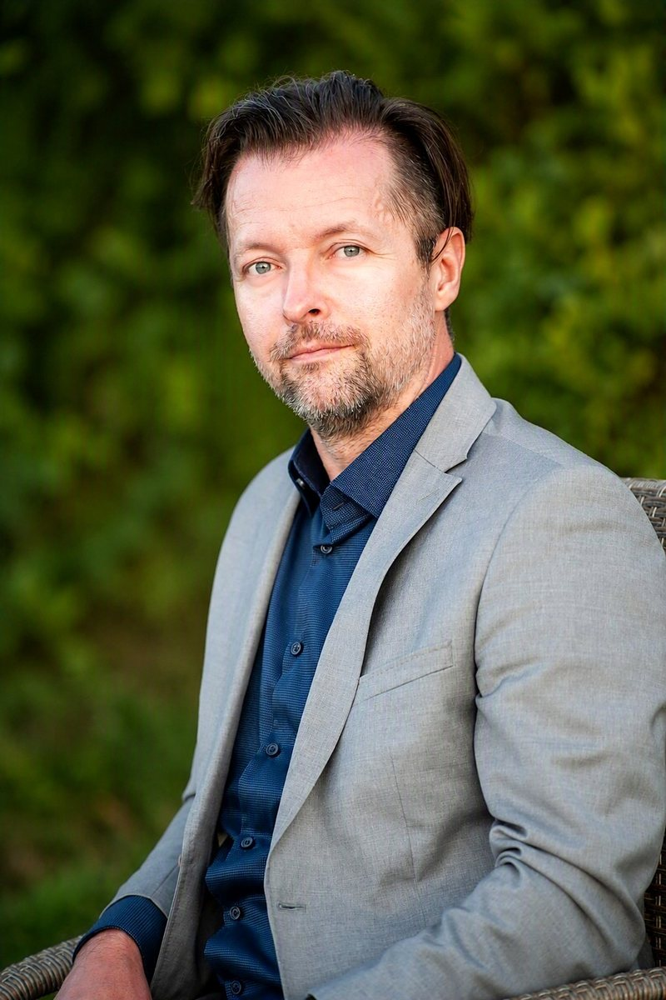

Engineering · Design · Art Ingenieurwesen · Design · Kunst
Andrei Vîntu
Mechanical Engineer · Industrial Design · Art Collector · Frankfurt am Main Maschinenbauingenieur · Industriedesign · Kunstsammler · Frankfurt am Main
I’ve always been drawn to how things are made and how they work. University and my engineering career answered much of that curiosity, and so I went further, toward a more spiritual and emotional perspective on life through art.
I approached both areas with initiatives of my own: a call for innovation with ciinum apparatics, and in art by starting to collect and co-initiating arc.
Years of working on engineering projects taught me that good ideas and the best quality only come about when passionate people take charge and keep grinding until every expectation is exceeded.
That’s why I want to build an engineering project for people with initiative and ideas of their own, from transportation to energy storage to everyday devices.
Art is the other half of me. I collect contemporary paintings and drawings, mostly figurative work by young artists, and I value the people behind the works as much as the works themselves. Out of that grew arc, a network I run that turns the one-time transaction between artist and collector into a lasting relationship.
Mich hat schon immer interessiert, wie Dinge gemacht sind und wie sie funktionieren. Studium und Ingenieurlaufbahn haben viel von dieser Neugier beantwortet, und so bin ich weitergegangen, hin zu einem spirituelleren und emotionaleren Blick auf das Leben durch die Kunst.
Beiden Bereichen habe ich mich mit eigenen Initiativen genähert: mit ciinum apparatics als Aufruf zur Innovation, und in der Kunst, indem ich zu sammeln begann und arc mitinitiiert habe.
Jahre in Ingenieurprojekten haben mich gelehrt, dass gute Ideen und beste Qualität nur entstehen, wenn leidenschaftliche Menschen Verantwortung übernehmen und dranbleiben, bis alle Erwartungen übertroffen sind.
Deshalb möchte ich ein Ingenieurprojekt für Menschen mit Eigeninitiative und eigenen Ideen aufbauen, von Mobilität über Energiespeicher bis zu Alltagsgeräten.
Die Kunst ist meine andere Hälfte. Ich sammle zeitgenössische Malerei und Zeichnung, vor allem figurative Arbeiten junger Künstler:innen, und schätze die Menschen hinter den Werken genauso wie die Werke selbst. Daraus ist arc entstanden, ein Netzwerk, das ich betreibe und das die einmalige Transaktion zwischen Künstler:in und Sammler:in in eine dauerhafte Beziehung verwandelt.